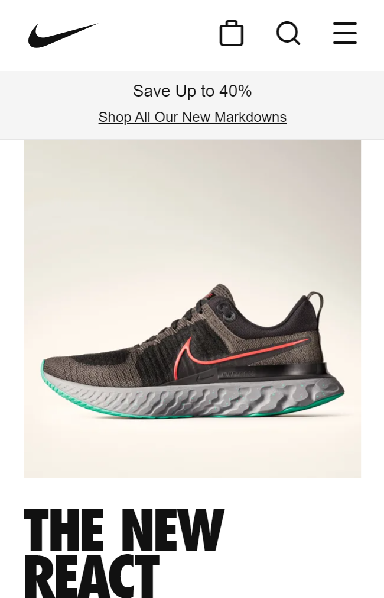
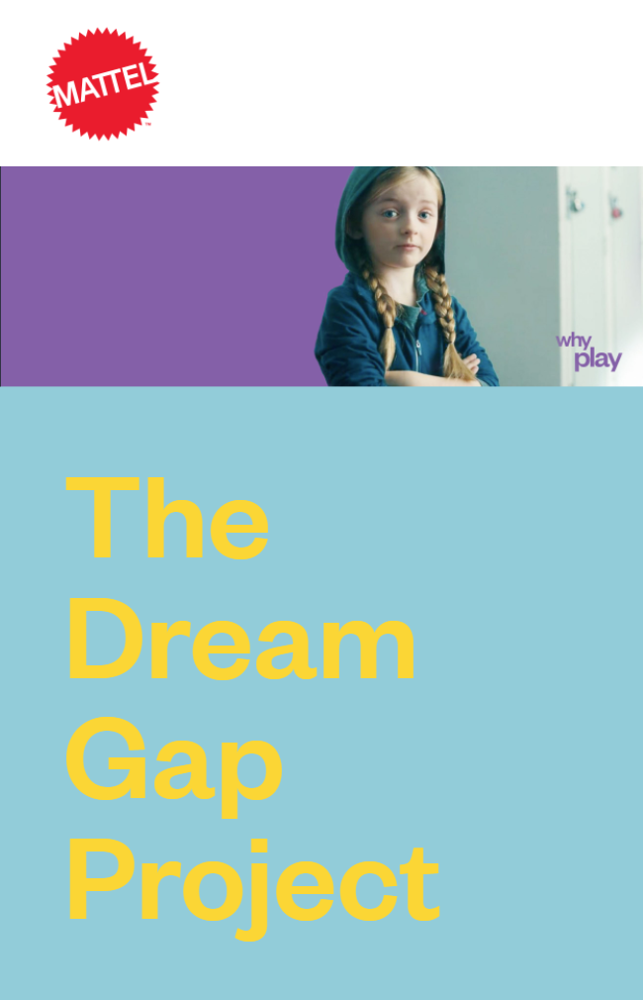

PARC:Proximity
Nike
Nike Website Nike's website shows the principle of proximity between their images and
the text description of their product. Also, between the announcements and
call to action. It's easy to recognize which elements belong to the same section.
Visual Hierarchy
Shopify
Shopify Website
Shopify uses well the principle of Visual Hierarchy, calling first the user attention
with an interesting text, and below is a call to action with a descriptive text of what the user can get.
It helps the website to achieve its business objectives and giving order to the page.
PARC:Contrast
Mattel
Mattel Website Mattel's webpage uses the principle of contrast very well. An image with a highlighted
purple background contrasting with Light blue color with yellow text and good bold typography
creating interest and adding fun to the website.